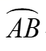
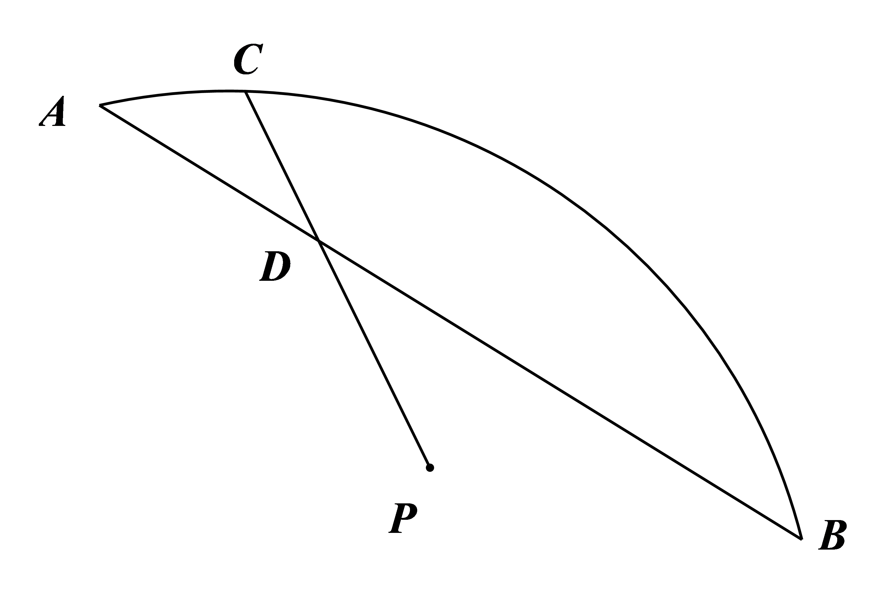
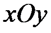
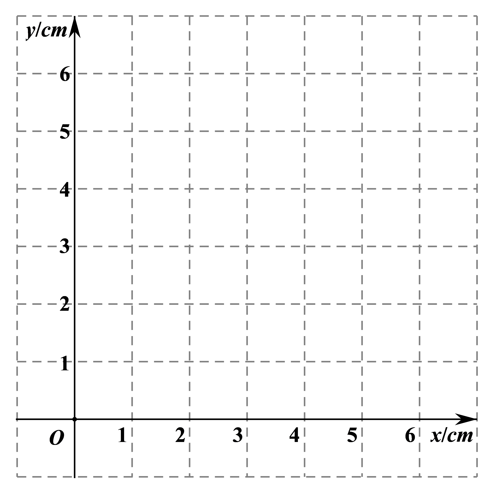

2019年北京市中考数学试题 · 数学解答题 第24题
24．如图，P是

与弦AB所围成的图形的外部的一定点，C是上一动点，连接PC交弦AB于点D．
小腾根据学习函数的经验，对线段PC，PD，AD的长度之间的关系进行了探究．
下面是小腾的探究过程，请补充完整：
（1）对于点C在上的不同位置，画图、测量，得到了线段PC，PD，AD的长度的几组值，如下表：
| 位置1 | 位置2 | 位置3 | 位置4 | 位置5 | 位置6 | 位置7 | 位置8 |
PC/cm | 3.44 | 3.30 | 3.07 | 2.70 | 2.25 | 2.25 | 2.64 | 2.83 |
PD/cm | 3.44 | 2.69 | 2.00 | 1.36 | 0.96 | 1.13 | 2.00 | 2.83 |
AD/cm | 0.00 | 0.78 | 1.54 | 2.30 | 3.01 | 4.00 | 5.11 | 6.00 |
在PC，PD，AD的长度这三个量中，确定 的长度是自变量，的长度和的长度都是这个自变量的函数；
的长度是自变量，的长度和的长度都是这个自变量的函数；
（2）在同一平面直角坐标系

中，画出（1）中所确定的函数的图象；
（3）结合函数图象，解决问题：当PC=2PD时，AD的长度约为cm．